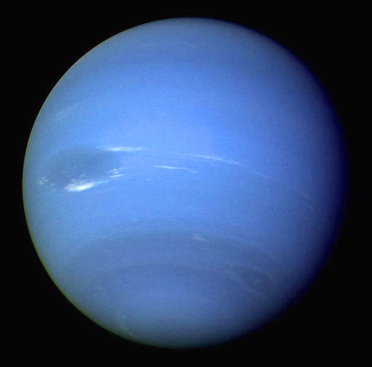
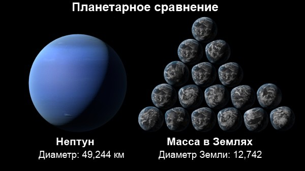
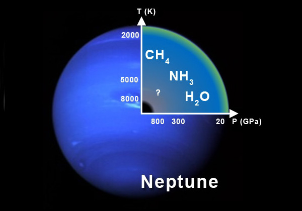

Нептун

Общие сведения
Непту́н — восьмая и самая дальняя от Земли планета Солнечной системы. Нептун также является четвёртой по диаметру и третьей по массе планетой. Масса Нептуна в 17,2 раза, а диаметр экватора в 3,9 раза больше земных. Планета была названа в честь римского бога морей. Её астрономический символ Neptune, стилизованная версия трезубца Нептуна.
Масса, обьем и орбита Нептуна
Объём 6,254⋅1013 км³
Масса 1,0243⋅1026
Средний радиус 24 622 ± 19 км
Площадь поверхности 7,6408⋅109 км²

Обладая массой в 1,0243⋅1026 кг, Нептун является промежуточным звеном между Землёй и большими газовыми гигантами. Его масса в 17 раз превосходит земную, но составляет лишь 1⁄19 от массы Юпитера. Экваториальный радиус Нептуна равен 24 764 км, что почти в 4 раза больше земного. Нептун и Уран часто считаются подклассом газовых гигантов, который называют «ледяными гигантами» из-за их меньшего размера и иного состава (меньшей концентрации летучих веществ). При поиске экзопланет Нептун используется как метоним: обнаруженные экзопланеты со схожей массой часто называют «нептунами», также часто астрономы используют как метоним «юпитеры».
Атмосфера и температура Нептуна
Атмосферное давление 0,1 бар

Состав:80±3,2 % водород (H2)
19±3,2 % гелий
1,5±0,5 % метан
~0,019 % дейтерид водорода (HD)
~0,00015 % этан
Льды:
аммиачные
водные
гидросульфидно-аммониевые (NH4SH)
Температура 72 К
Исследование
Ближе всего к Нептуну «Вояджер-2» подошёл 25 августа 1989 года. Так как Нептун был последней крупной планетой, которую мог посетить космический аппарат, было решено совершить близкий пролёт вблизи Тритона, не считаясь с последствиями для траектории полёта. Схожая задача стояла и перед «Вояджером-1» — пролёт вблизи Сатурна и его крупнейшего спутника — Титана. Изображения Нептуна, переданные на Землю «Вояджером-2», стали основой для появления в 1989 году в Публичной телевещательной службе (PBS) программы на всю ночь под названием «Нептун всю ночь»

Интересные факты
1. Когда он был открыт в 1846 году, он являлся самой далекой планетой в Солнечной системе. В 1930 году был открыт Плутон, который перехватил звание. Орбита Плутона очень вытянута и есть такие периоды, когда он подходит ближе к Солнцу, чем Нептун. В последний раз это случилось в 1979 году и продлилось до 1999 года. В течение этого периода, он находился дальше всех. А потом, в 2006 году Международный астрономический союз решил, что Плутон больше не является планетой. И с тех пор голубой газовый гигант самая далекая
2. Планета представляет собой шар из газа и льда, с каменистым ядром. У него нет поверхности, как например у Марса или Земли. Его могучая атмосфера постепенно переходит в жидкий океан, а затем, при увеличении плотности, в ледяную мантию. Но если мы могли бы стоять на гипотетической поверхности, то практически бы не заметили разницы с Земным притяжением. Гравитация только на 17% сильнее, чем земная. Он в 17 раз больше массы Земли и почти в 4 раза тяжелее. Его огромная масса распределяется на больший объем и сила тяжести уменьшается соответственно
3. Крупнейший спутник, Тритон, вращается по ретроградной орбите. Это означает, что он вращается в обратном направлении по сравнению с другими лунами на орбите газового гиганта. Получается, что Тритон, вероятно был захвачен планетой. Тритон всегда повернут одной стороной, и медленно по спирали приближается к газовому гиганту
JPTVR18 © Muntjan